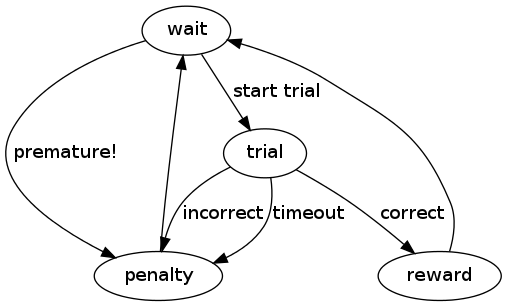

The definition of a task class contains a set of states and the rules for moving between those states, a set of parameters (both hard-coded and user-defined), state methods (which specify what happens during each state), and transition methods (which specify the conditions for changing states). Every task is a subclass of the Experiment class.
A state can be thought of as a discrete part of the task which is triggered by some condition being met and ends when some other condition is met (i.e. waiting for fixation, or a target hold). The state transition definition describes the structure of the task. For each possible state it lists all the possible subsequent states and the events that trigger those transitions.
For example, the parent class Experiment has the following structure, where ovals represent states and arrows represent transitions:
A state transition definition is written in the code as a nested dictionary with the name status that delineates all possible event-next state transitions that could occur from within each state. It is usually the very first thing defined in a task class. For the task illustrated above, the state transition definition in the code looks like:
status = dict(
wait = dict(start_trial="trial", premature="penalty", stop=None),
trial = dict(correct="reward", incorrect="penalty", timeout="penalty"),
reward = dict(post_reward="wait"),
penalty = dict(post_penalty="wait"),
)
There are four states in this task (wait, trial, reward, and penalty). Each state name is entered in the status dictionary as a key with another dictionary for the value. That dictionary in turn contains keys which are the names of events that trigger state transitions (they can also be thought of as tests that must be passed in order to move to the next state), and values which are the names of the states that follow these events. So while this task is in the wait state, it can do one of four things at any moment: if the start_trial test is passed, it transitions to the trial state; if the premature test is passed, it transitions to the penalty state; if the experiment receives a stop signal from the server, the task ends; if none of these things occur, it remains in the wait state.
Note
The key/value pair stop = None can be inserted into any state where you would like the server to be able to stop the task immediately. If a state’s dictionary does not contain this entry and a stop command is received, the task will continue until it reaches a state that does contain it. Make sure at least one state has an exit transition, otherwise you will not be able to stop execution of your task!
A task class’ methods determine the behavior within each state and the criteria for triggering state transitions. There are five types of special methods:
__init__
Every task has an __init__ method that contains actions to be performed once when the task is first run:
#initialize and create fixation point object
def __init__(self, **kwargs):
super(FixationTraining, self).__init__(**kwargs)
self.fixation_point = Sphere(radius=.1, color=(1,0,0,1))
If no initialization steps are necessary for the task, the __init__ method can be omitted (because it will automatically inherit the parent __init__ method). This is true of the other special methods as well; however, if an __init__ method is included, it MUST contain a call to the parent method, whereas the rest of the special methods may be written to replace the parent methods if desired.
_start_
_start_ methods specify actions to be performed once at the onset of a new state:
In the above example, every time the task enters the wait state, the origin target’s color changes and the target is hidden from the screen, in addition to whatever actions are already performed by the parent class’ _start_wait method.
The full name of the method should always be the _start_ prefix followed by a state name that appears in the state transition definition, and the method should take self as its sole argument. (These two rules apply to _while_ and _end_ methods as well.)
_while_
_while_ methods specify actions to be repeated (usually once per frame) while the task is in a state. Here, the cursor position is being constantly updated during the wait state:
def _while_wait(self):
self.update_cursor()
_end_
_end_ methods specify actions to be performed once at the end of a state, just before the task transitions to the next state. In this example, the origin target changes color once a target hold is complete:
def _end_origin_hold(self):
#change target color
self.origin_target.color = (0,1,0,0.5)
_test_
_test_ methods define the criteria for state transitions. They are called constantly in the background during corresponding states, and must always return a boolean value. When a _test_ method returns True, a transition to the state specified in the state transition definition is triggered. _test_ methods must be named with the prefix _test_ followed by one of the event names listed in the state transition definition, and they always have two arguments: self and ts, which is a variable containing the elapsed time in seconds since the onset of the current state. The following _test_ method returns True when the elapsed time in the current state (origin_hold) exceeds the constant value origin_hold_time:
def _test_hold(self, ts):
return ts>=self.origin_hold_time
_cycle TODO
Parameters which you want to be set by the experimenter at runtime can be defined as Traits within the task class definition:
# settable traits
reward_time = traits.Float(.5, desc="Length of juice reward")
The first argument is the default value for the trait and the second is a docstring that will show up when the mouse hovers over that parameter in the web interface. The name of the variable will be the text the user sees in the list of parameters (in this case reward_time).
“Instance” traits
traits.Instance-type traits are used for selecting the Decoder. They are useful when the datatype of the thing you want to select is represented by some custom class and you want to be able to select directly from a list of objects. In the current implementation, the object type (e.g., riglib.bmi.Decoder) must correspond to a database model (e.g., models.Decoder). A drop-down list in the GUI is populated with recently created models.Decoder instances. This association is made through db.namelist.instance_to_model. When data from the GUI is submitted back to the server, the object corresponding to the database record is retreived (db.json_param.norm_trait).
“Enum” traits
Enum traits provide an alternative way to Instance traits to create a drop-down menu of options on the web interface. If you wish to add an Enum attribute ATTR to a task, you must also specify ATTR_options as a list of string options to select from. This is due to a deficiency in the way traits.Enum objects are created in the version of traits currently being used; there appears to be no way to extract the possible traits from the Enum object.
Two types of data saving are currently supported: 1) Saving a variable which could change on every clock tick of the FSM 2) Saving a static variable
Variables you wish to save every FSM iteration must be declared prior to starting the task. The base experiment class has an attribute ‘dtype’, and each new variable to save must be added to this list using the experiment.Experiment.add_dtype method.
To actually save the variable (suppose your variable is named ‘data’), sometime during the execution of the ‘_cycle’ method of your task, you must do
self.task_data['data'] = data_value
Important note: in child classes, you must do this before calling the ‘super’ _cycle method to ensure that your data is saved properly. This is because the final _cycle in the method resolution order is the experiment.Experiment._cycle method, which will send your task_data to any registered sinks. So if you do not set the variable beforehand, it may appear as the data you have saved to file is off by one timestep.
Features are partial tasks which can be used to extend a “base” task using multiple inheritance.